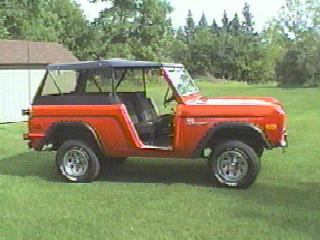

This Bronco, was used as a snowplow vehicle,before I restored it and converted it to a roadster style, with a soft top. It is a 302 V-8,with an automatic. There are plenty of after market parts available for these.